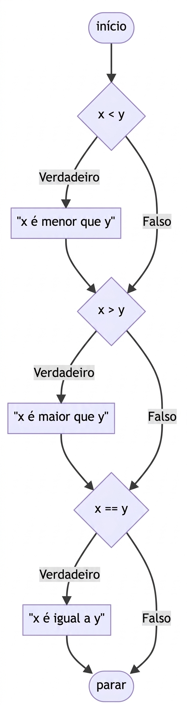
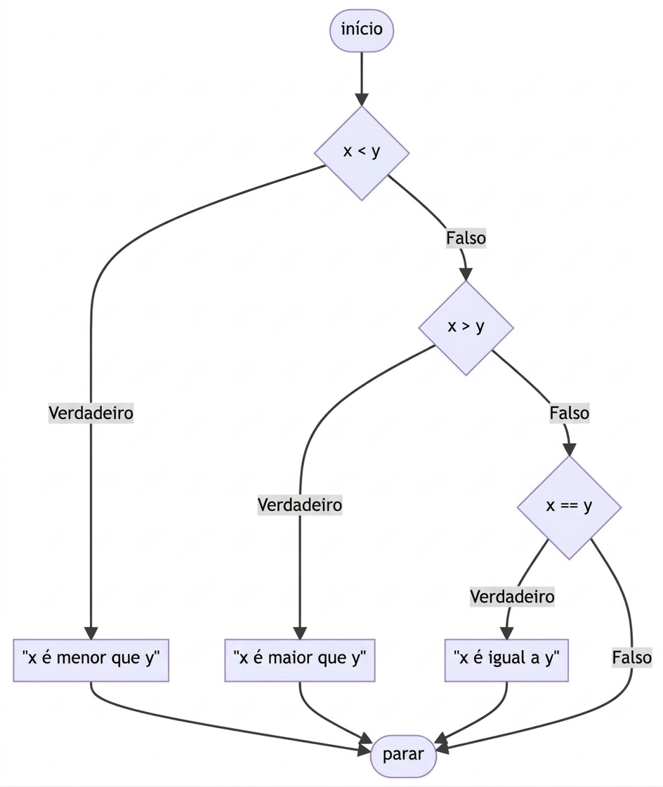
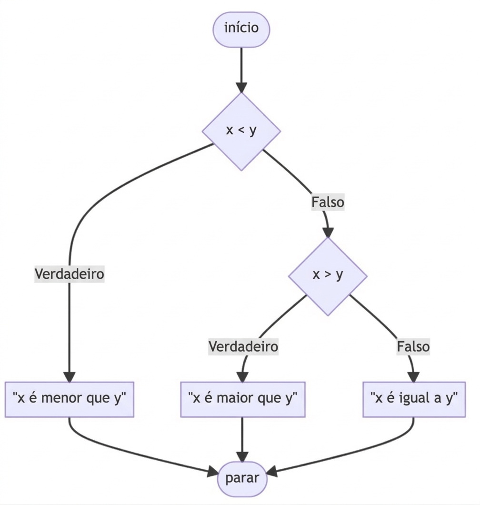
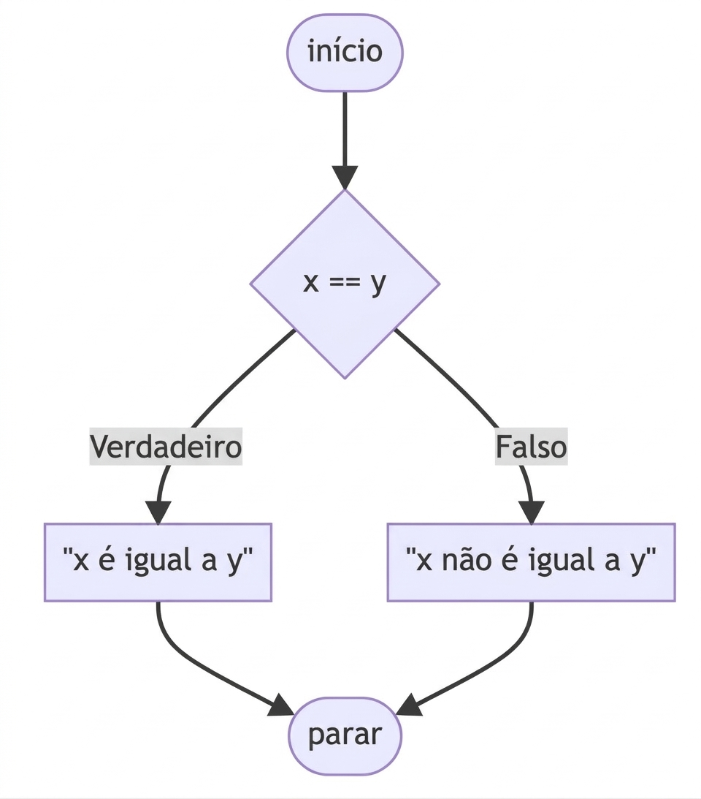

x = int(input("Qual o valor de x? "))
y = int(input("Qual o valor de y? "))
if x < y:
print("x é menor que y")4 Controle de fluxo e iteração
4.1 Introdução
Na programação, é muito comum precisarmos que determinados blocos de código sejam executados apenas quando uma condição específica for atendida. Para lidar com esse tipo de situação, o Python oferece mecanismos para controlar o fluxo de execução do programa, chamados de estruturas condicionais. As principais estruturas condicionais em Python são: if, elif, else.
Essas estruturas permitem que o programa tome decisões durante a execução, escolhendo diferentes caminhos dependendo das condições definidas. Podemos imaginar isso como uma encruzilhada: dependendo da condição avaliada, o programa pode seguir por um caminho ou por outro. Para que essas decisões sejam possíveis, o Python utiliza expressões booleanas e operadores de comparação e lógicos, que permitem verificar relações entre valores.
4.2 Expressões Booleanas
Uma expressão booleana é qualquer expressão que resulta em um dos dois valores lógicos possíveis: True (verdadeiro) ou False (falso). Essas expressões são essenciais para o controle de fluxo, pois determinam quais blocos de código serão executados.
Expressões booleanas geralmente envolvem operadores de comparação (como ==, !=, >, <) ou operadores lógicos (and, or, not). Essas expressões podem ser usadas diretamente em estruturas condicionais para tomar decisões no programa.
4.2.1 Operadores de Comparação
Os operadores de comparação são usados para comparar dois valores. Esses operadores comparam um valor do lado esquerdo com um valor do lado direito, retornando True ou False.
| Operador | Nome | Função |
|---|---|---|
== |
Igual a | Verifica se um valor é igual ao outro |
!= |
Diferente de | Verifica se um valor é diferente ao outro |
> |
Maior que | Verifica se um valor é maior que outro |
>= |
Maior ou igual | Verifica se um valor é maior ou igual ao outro |
< |
Menor que | Verifica se um valor é menor que outro |
<= |
Menor ou igual | Verifica se um valor é menor ou igual ao outro |
4.2.2 Operadores Lógicos
Além dos operadores de comparação, Python também possui operadores lógicos que permitem combinar múltiplas condições. Os principais são:
| Operador | Definição |
|---|---|
and |
Retorna True se ambas as afirmações forem verdadeiras |
or |
Retorna True se uma das afirmações for verdadeira |
not |
retorna False se o resultado for verdadeiro |
4.2.3 Operadores de Identidade
Esses operadores são utilizados para comparar objetos, verificando se duas variáveis referenciam o mesmo objeto na memória.
| Operador | Definição |
|---|---|
is |
Retorna True se ambas as variáveis são o mesmo objeto |
is not |
Retorna True se ambas as variáveis não forem o mesmo objeto |
4.2.4 Operadores de Associação
Esses operadores verificam se um elemento pertence ou não a uma estrutura de dados, como listas, strings ou tuplas.
| Operador | Definição |
|---|---|
in |
Retorna True caso o valor seja encontrado na sequência |
not in |
Retorna True caso o valor não seja encontrado na sequência |
4.2.5 Operadores de Atribuição
Esses operadores são utilizados para atribuir valores a variáveis e também para atualizar valores existentes.
| Operador | Equivalente a |
|---|---|
= |
x = 1 |
+= |
x = x + 1 |
-= |
x = x - 1 |
*= |
x = x * 1 |
/= |
x = x / 1 |
%= |
x = x % 1 |
4.3 Instruções if
Para escrever programas úteis, quase sempre precisamos da capacidade de verificar condições e alterar o comportamento do programa de acordo com elas. As instruções condicionais nos dão essa capacidade. A forma mais simples é a instrução if. Vamos começar com o seguinte exemplo:
Observe como o programa recebe a entrada do usuário para x e y, convertendo esses valores para inteiros e armazenando-os nas respectivas variáveis x e y. Em seguida, a instrução if compara x e y. Se a condição x < y for satisfeita, o comando print é executado.
As instruções if utilizam valores booleanos (True ou False) para decidir se um bloco de código deve ou não ser executado. Se a comparação x < y for True, o interpretador executa o bloco de código indentado.
4.4 Controle de Fluxo: elif e else
Uma instrução if pode ter uma segunda parte, chamada de cláusula else. A sintaxe é a seguinte:
x = int(input("Qual o valor de x? "))
y = int(input("Qual o valor de y? "))
if x < y:
print("x é menor que y")
if x > y:
print("x é maior que y")
if x == y:
print("x é igual a y")Observe que você está fornecendo uma série de instruções if. Primeiro, a primeira instrução if é avaliada. Em seguida, a segunda instrução if realiza sua avaliação. Por fim, a última instrução if também é avaliada. Esse fluxo de decisões é chamado de controle de fluxo.
Nosso código pode ser representado da seguinte forma:

Este programa pode ser melhorado evitando fazer três verificações consecutivas. Afinal, nem todas as três condições podem ser verdadeiras ao mesmo tempo!
x = int(input("Qual o valor de x? "))
y = int(input("Qual o valor de y? "))
if x < y:
print("x é menor que y")
elif x > y:
print("x é maior que y")
elif x == y:
print("x é igual a y")A palavra-chave elif é uma abreviação para else if. Observe como o uso de elif permite que o programa faça menos verificações. Primeiro, a instrução if é avaliada. Se essa condição for verdadeira, todas as instruções elif não serão executadas.
No entanto, se a instrução if for avaliada e considerada falsa, o primeiro elif será avaliado. Se essa condição for verdadeira, a verificação final não será executada. Nosso código pode ser representado da seguinte forma:

Embora o seu computador talvez não perceba diferença de velocidade entre o primeiro programa e essa versão revisada, considere que um servidor online executando bilhões ou trilhões desse tipo de cálculo todos os dias pode ser impactado até mesmo por uma pequena decisão de programação.
Há ainda uma melhoria final que podemos fazer no programa. Observe que, logicamente, a verificação elif x == y não é necessária. Afinal, se x não é menor que y e x não é maior que y, então x necessariamente deve ser igual a y. Portanto, não precisamos executar elif x == y. Em vez disso, podemos criar um resultado padrão, que será executado caso nenhuma das condições anteriores seja verdadeira, utilizando a instrução else. Podemos revisar o código da seguinte forma:
x = int(input("Qual o valor de x? "))
y = int(input("Qual o valor de y? "))
if x < y:
print("x é menor que y")
elif x > y:
print("x é maior que y")
else:
print("x é igual a y")Observe como a complexidade relativa deste programa diminuiu após nossa revisão. Nosso código pode ser representado da seguinte forma:

4.5 Operador or
O operador or permite que o programa tome uma decisão entre uma ou mais alternativas. Por exemplo, podemos modificar ainda mais o nosso programa da seguinte forma:
x = int(input("Qual o valor de x? "))
y = int(input("Qual o valor de y? "))
if x < y or x > y:
print("x não é igual a y")
else:
print("x é igual a y")Observe que o resultado do programa permanece o mesmo, mas a complexidade foi reduzida. Com isso, a eficiência do código aumenta. Neste ponto, nosso código já está bastante bom. No entanto, será que o design do programa ainda pode ser melhorado? Podemos modificar nosso código da seguinte forma:
x = int(input("Qual o valor de x? "))
y = int(input("Qual o valor de y? "))
if x != y:
print("x não é igual a y")
else:
print("x é igual a y")Observe que removemos completamente o operador or e simplesmente perguntamos: “x é diferente de y?”. Assim, fazemos apenas uma única verificação, o que torna o código mais eficiente. Para fins de ilustração, também poderíamos modificar nosso código da seguinte forma:
x = int(input("Qual o valor de x? "))
y = int(input("Qual o valor de y? "))
if x == y:
print("x é igual a y")
else:
print("x não é igual a y")Observe que o operador == verifica se os valores à esquerda e à direita são iguais entre si. O uso de dois sinais de igual é muito importante. Se você usar apenas um sinal de igual (=), o interpretador provavelmente retornará um erro. Nosso código pode ser ilustrado da seguinte forma:

4.6 Operador and
Assim como o operador or, o operador and também pode ser utilizado em instruções condicionais. Comece seu novo programa da seguinte forma:
nota = int(input("Nota: "))
if nota >= 90 and nota <= 100:
print("Conceito: A")
elif nota >=80 and nota < 90:
print("Conceito: B")
elif nota >=70 and nota < 80:
print("Conceito: C")
elif nota >=60 and nota < 70:
print("Conceito: D")
else:
print("Conceito: F")Observe que, ao executar o programa, você poderá inserir uma nota e receber um conceito. No entanto, perceba que ainda existe potencial para erros (bugs). Normalmente, não devemos confiar que os usuários sempre irão inserir informações corretas. Podemos melhorar nosso código da seguinte forma:
nota = int(input("Nota: "))
if 90 <= nota <= 100:
print("Conceito: A")
elif 80 <= nota < 90:
print("Conceito: B")
elif 70 <= nota < 80:
print("Conceito: C")
elif 60 <= nota < 70:
print("Conceito: D")
else:
print("Conceito: F")Observe como o Python permite encadear operadores e condições de uma maneira pouco comum em muitas outras linguagens de programação. Ainda assim, podemos melhorar ainda mais o nosso programa:
nota = int(input("Nota: "))
if nota >= 90:
print("Conceito: A")
elif nota >= 80:
print("Conceito: B")
elif nota >= 70:
print("Conceito: C")
elif nota >= 60:
print("Conceito: D")
else:
print("Conceito: F")Observe como o programa foi melhorado ao fazer menos verificações. Isso torna o código mais fácil de ler e muito mais fácil de manter no futuro. Você pode aprender mais na documentação oficial do Python sobre controle de fluxo.
4.7 Instrução match
Assim como as instruções if, elif e else, as instruções match também podem ser usadas para executar código condicionalmente, dependendo de determinados valores. Considere o seguinte programa:
curso = input("Qual é o seu curso? ")
if curso == "Economia":
print("FEA")
elif curso == "Administração":
print("FEA")
elif curso == "Contabilidade":
print("FEA")
elif curso == "Matemática":
print("IME")
else:
print("Curso não encontrado")Observe que as três primeiras instruções condicionais exibem a mesma resposta. Podemos melhorar um pouco esse código utilizando a palavra-chave or:
curso = input("Qual é o seu curso? ")
if curso == "Economia" or curso == "Administração" or curso == "Contabilidade":
print("FEA")
elif curso == "Matemática":
print("IME")
else:
print("Curso não encontrado")Observe que o número de instruções elif diminuiu, melhorando a legibilidade do nosso código. Como alternativa, podemos usar instruções match para associar os cursos às unidades da USP. Considere o seguinte código:
curso = input("Qual é o seu curso? ")
match curso:
case "Economia":
print("FEA")
case "Administração":
print("FEA")
case "Contabilidade":
print("FEA")
case "Matemática":
print("IME")
case _:
print("Curso não encontrado")Observe o uso do símbolo _ no último case. Ele corresponde a qualquer entrada, resultando em um comportamento semelhante ao de uma instrução else. Uma instrução match compara o valor que aparece após a palavra-chave match com cada um dos valores definidos após as palavras-chave case. Quando uma correspondência é encontrada, o bloco de código indentado correspondente é executado e o programa interrompe as demais verificações. Podemos melhorar o código da seguinte forma:
curso = input("Qual é o seu curso? ")
match curso:
case "Economia" | "Administração" | "Contabilidade":
print("FEA")
case "Matemática":
print("IME")
case _:
print("Curso não encontrado")Observe o uso da barra vertical simples (|). Assim como a palavra-chave or, ela permite verificar múltiplos valores dentro da mesma instrução case.